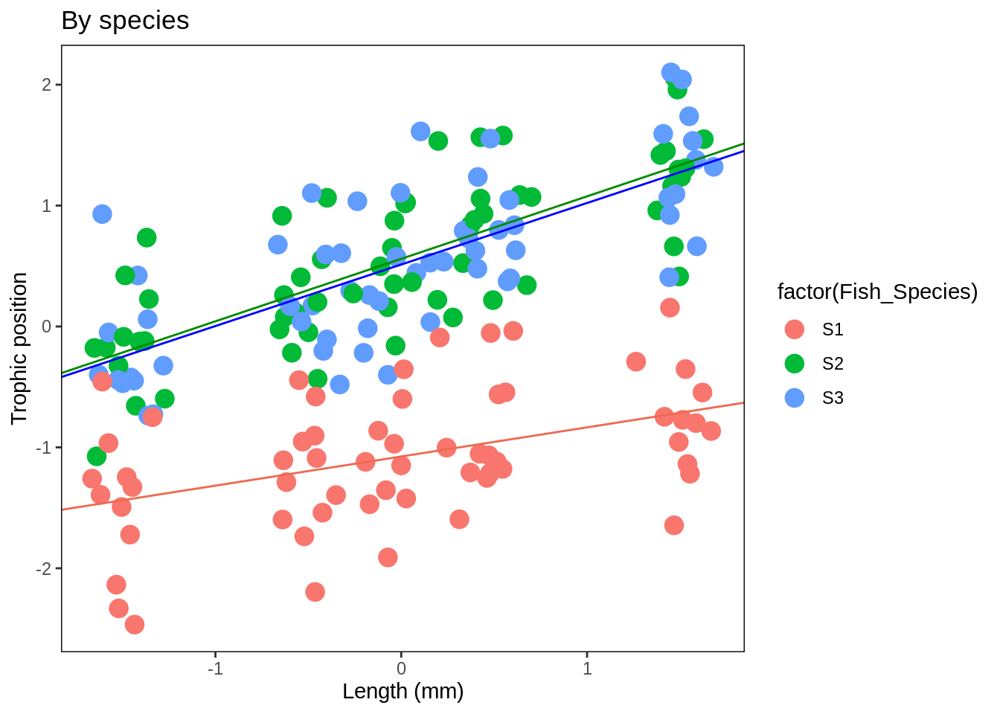
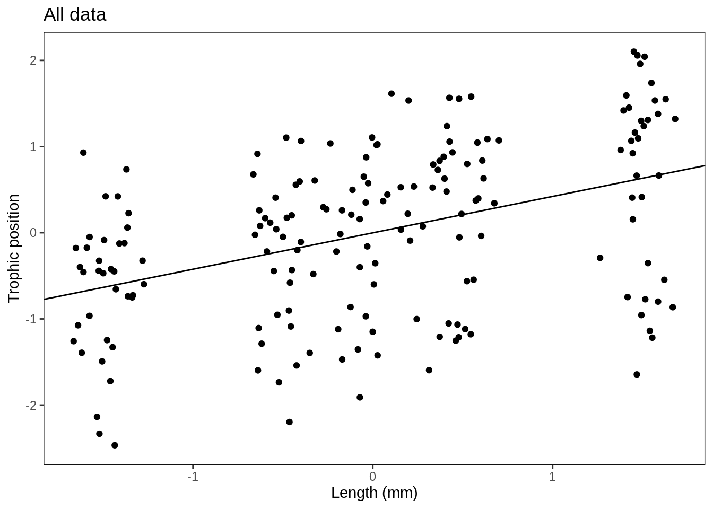
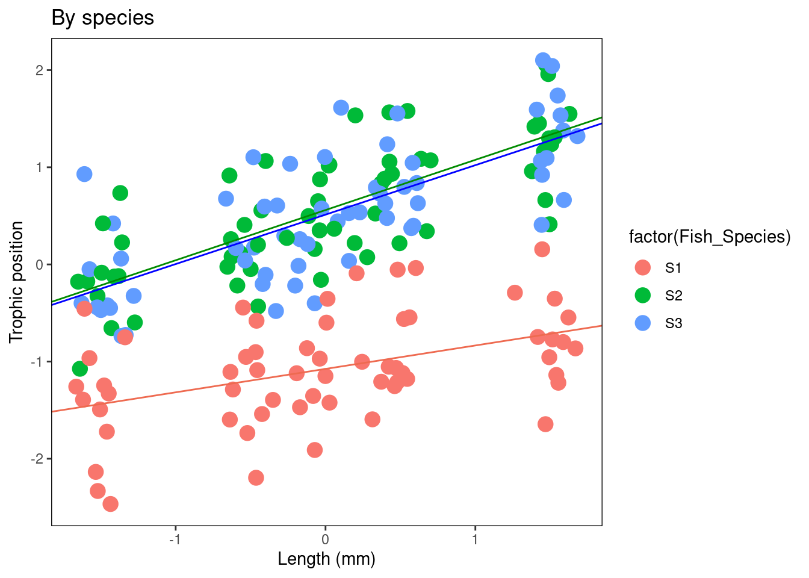

Chapter 12 Step 4. Interpretation and visualization
12.1 Interpreting our model
Let’s take a closer look at our final model using the summary() function. How can we interpret this information?
# Now we are ready for interpretation and visualization
# Let's take a closer look at our final model using the
# `summary()` function.
(summ_M8 <- summary(M8))## Linear mixed model fit by REML ['lmerMod']
## Formula: Z_TP ~ Z_Length + (1 + Z_Length | Fish_Species) + (1 | Lake)
## Data: fish.data
##
## REML criterion at convergence: 21.7
##
## Scaled residuals:
## Min 1Q Median 3Q Max
## -2.77187 -0.60166 0.05589 0.64239 2.27776
##
## Random effects:
## Groups Name Variance Std.Dev. Corr
## Lake (Intercept) 0.20504 0.4528
## Fish_Species (Intercept) 0.86715 0.9312
## Z_Length 0.02466 0.1570 1.00
## Residual 0.05039 0.2245
## Number of obs: 180, groups: Lake, 6; Fish_Species, 3
##
## Fixed effects:
## Estimate Std. Error t value
## (Intercept) -0.0009059 0.5687733 -0.002
## Z_Length 0.4222697 0.0922117 4.579
##
## Correlation of Fixed Effects:
## (Intr)
## Z_Length 0.929
## optimizer (nloptwrap) convergence code: 0 (OK)
## boundary (singular) fit: see help('isSingular')Let’s go section by section and try to understand what we are looking at.
The output is broken up into descriptions of the Random effects (things we allow to vary based on the normal distribution) and Fixed effects (things we estimate in the same way as classical regression):
Random effects:Groups: grouping factorsName:(Intercept)for the intercepts or the name of the variable on which the random slope is estimated (Z_lengthin this example)Variancethe variance of the estimated effect (Std.Dev.is the standard deviation of this estimate)Corrthe correlation between the random interpet and the random slope for a given grouping factor (see this dicussion).
This part presents the fixed effect estimates. The value of the t statistics (Student test) is shown without the p-value (it is a decision from the package authors, see why in this discussion).
These statistics could be used as it is. You could also calculate the 95% confidence interval (CI) with this equation:
\[ CI = Estimate \pm 1.96*Std.Error \]
If 0 is in the interval, then the parameter is not significantly different from zero at a threshold of \(\alpha\) = 0.05.

Using our example: To determine if the slope (and therefore the effect of length on trophic position) is significantly different from zero you first have to calculate the confidence interval (CI) for the slope parameter (estimate for Z_Length in the fixed effects section = 0.4223). The CI = Standard Error of the estimate x 1.96 plus or minus the parameter estimate. If the CI overlaps with zero, then the slope is not significantly different from zero at the 0.05 level.
Some useful functions
coef(M8)andranef(M8)return random effects of model M8coef(summary(M8))returns fixed effectssigma(M8)returns standard deviation of residualsfitted(M8)returns predicted values by the modelresiduals(M8)returns residuals
12.2 Challenge 6
1. What is the slope and confidence interval of the Z_Length variable in the M8 model?
2. Is the slope of Z_Length significantly different from 0?
Challenge 6 Solution:
1. What is the slope and confidence interval of the Z_Length variable in the M8 model?
slope = 0.422;
CI upper limit = 0.4223 + 0.09*1.96 = 0.5987
CI lower limit = 0.4223 - 0.09*1.96 = 0.2459
2. Is the slope of Z_Length significantly different from 0?
- Yes, because the CI [0.2459, 0.5987] does not include 0
12.3 Challenge 7
Is it possible to visualize graphically the different intercepts and slopes of the model to better interpret the results?
Take 2 minutes to think about different ways to represent the results of M8.
Hint: consider the different “levels” of the model
Challenge 7 Solution:
Is it possible to visualize graphically the different intercepts and slopes of the model to better interpret the results?
Yes! We could do this by generating:
A figure with all data grouped
A figure by species
A figure by lake
To produce these figures, we need (1) the coefficients of the full model that are in the model summary, (2) The coefficients for each level of the model, which can be obtained with the coef function
# Challenge 7: *Is it possible to visualize graphically the
# different intercepts and slopes of the model to better
# interpret the results?
# Challenge 7 solution: Yes! We could do this by generating
# the following figures. a) A figure with all data grouped
# b) A figure by species c) A figure by lake
# To produce these figures, first we need the coefficients
# of the full model that are in the model summary.
summ_M8$coefficients## Estimate Std. Error t value
## (Intercept) -0.0009058974 0.56877327 -0.001592722
## Z_Length 0.4222697238 0.09221166 4.579352788# Intercept = Intercept = 9.0589745 × 10^4 Slope =
# 0.4222697
# We also need the coefficients for each level of the
# model, which can be obtained with the `coef` function
coef(M8)## $Lake
## (Intercept) Z_Length
## L1 -0.085984071 0.4222697
## L2 0.002205209 0.4222697
## L3 -0.301816557 0.4222697
## L4 -0.574039728 0.4222697
## L5 0.218650140 0.4222697
## L6 0.735549622 0.4222697
##
## $Fish_Species
## (Intercept) Z_Length
## S1 -1.0752985 0.2410746
## S2 0.5597871 0.5168300
## S3 0.5127938 0.5089046
##
## attr(,"class")
## [1] "coef.mer"Now let’s make our figures!
- Figure with all data grouped
# Now let's make our figures!
# a) Figure with all data grouped Create a simplified
# ggplot theme
fig <- theme_bw() + theme(panel.grid.minor = element_blank(),
panel.grid.major = element_blank(), panel.background = element_blank()) +
theme(strip.background = element_blank(), strip.text.y = element_text()) +
theme(legend.background = element_blank()) + theme(legend.key = element_blank()) +
theme(panel.border = element_rect(colour = "black", fill = NA))
plot <- ggplot(aes(Z_Length, Z_TP), data = fish.data)
Plot_AllData <- plot + geom_point() + xlab("Length (mm)") + ylab("Trophic position") +
labs(title = "All data") + fig
Plot_AllData + geom_abline(intercept = summ_M8$coefficients[1,
1], slope = summ_M8$coefficients[2, 1])
# You could also write out the numbers like this:
# Plot_AllData + geom_abline(intercept = -0.0009059, slope
# = 0.4222697)- Figure by species
# b) Figure by species Create a table with the coefs to
# facilitate their manipulation
Lake.coef <- coef(M8)$Lake
colnames(Lake.coef) <- c("Intercept", "Slope")
Species.coef <- coef(M8)$Fish_Species
colnames(Species.coef) <- c("Intercept", "Slope")
Plot_BySpecies <- plot + geom_point(aes(colour = factor(Fish_Species)),
size = 4) + xlab("Length (mm)") + ylab("Trophic position") +
labs(title = "By species") + fig
# Add regression lines for each species
Plot_BySpecies + geom_abline(intercept = Species.coef[1, 1],
slope = Species.coef[1, 2], col = "coral2") + geom_abline(intercept = Species.coef[2,
1], slope = Species.coef[2, 2], col = "green4") + geom_abline(intercept = Species.coef[3,
1], slope = Species.coef[3, 2], col = "blue1")
- Figure by lake
# c) Figure by lake
Plot_ByLake <- plot + geom_point(aes(colour = factor(Lake)),
size = 4) + xlab("Length (mm)") + ylab("Trophic Position") +
labs(title = "By Lake") + fig
# Add in regression lines with the intercepts specific to
# each lake
Plot_ByLake + geom_abline(intercept = Lake.coef[1, 1], slope = Lake.coef[1,
2], col = "coral2") + geom_abline(intercept = Lake.coef[2,
1], slope = Lake.coef[2, 2], col = "khaki4") + geom_abline(intercept = Lake.coef[3,
1], slope = Lake.coef[3, 2], col = "green4") + geom_abline(intercept = Lake.coef[4,
1], slope = Lake.coef[4, 2], col = "darkgoldenrod") + geom_abline(intercept = Lake.coef[5,
1], slope = Lake.coef[5, 2], col = "royalblue1") + geom_abline(intercept = Lake.coef[6,
1], slope = Lake.coef[6, 2], col = "magenta3")
12.4 Challenge 8
Let’s test our knowledge by considering another scenario.
Imagine that you have inventoried species richness in 1000 quadrats that are within 10 different sites which are also within 10 different forests. You also measured productivity in each quadrat.
You want to know if productivity is a good predictor of biodiversity. What mixed model could you use for this dataset?
Challenge 8 Solution:
Here the random effects are nested (i.e. Sites within forest) and not crossed.
Why use (1 | Forest / Site) rather than (1 | Forest) + (1 | Site)?
See the answer here!